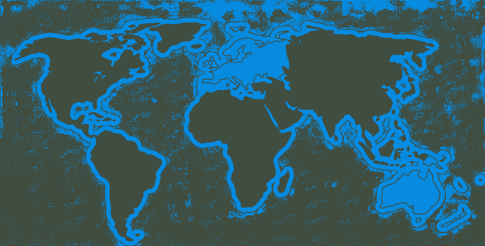

The world is full of stories
Choose a continent.
Tap a location pin to browse countries and historic sites. Start anywhere; every place has a story to tell.

Six regions · Thirty featured sitesSelect a pin to explore
Selected region